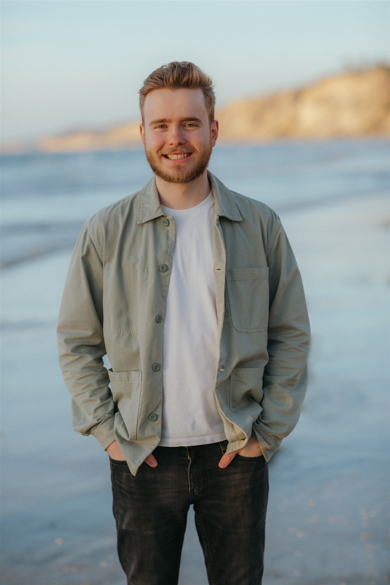
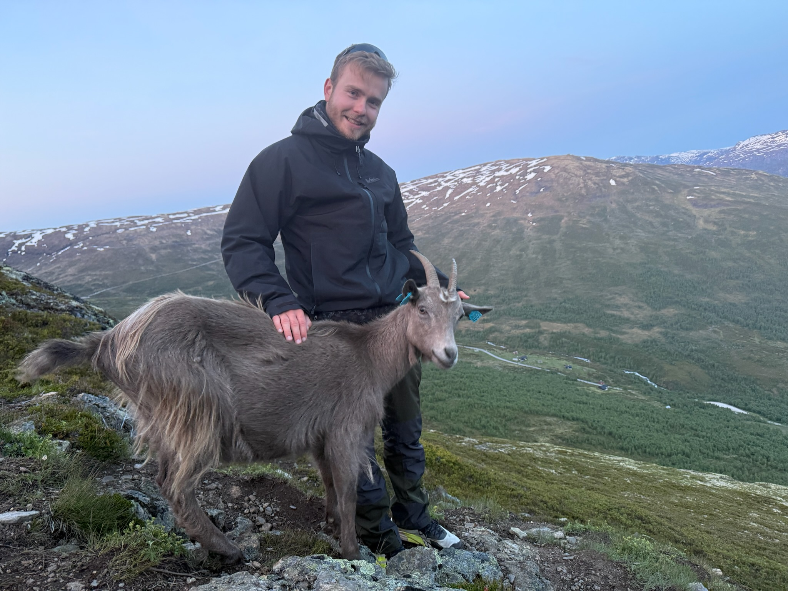
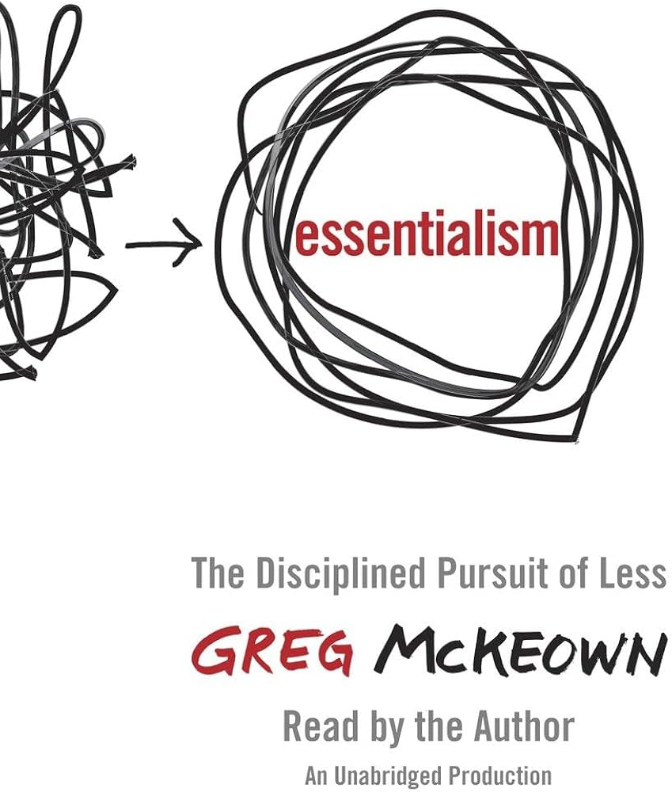

Hiking
I enjoy seeing the goal ahead and watching the progress with every step. Finding a scenic place to stop for lunch is a pretty good bonus.
Beyond engineering · About Lucas
I’m happiest when I can bring people together, stay curious, and make room for life away from a screen.
Get to know me ↓
It’s how I move through the world.
Engineering appeals to the part of me that likes turning ambiguity into something useful. Outside of it, that same curiosity pulls me toward new places, long conversations, and the kind of challenges that cannot be solved from a desk.
I value directness, patience, and making people feel included. Mentoring international students, organizing life in Munich’s student residences, and facilitating workshops have shaped those values just as much as my technical work has.
I also make a point of trying new things. Most recently, that meant indoor cycling and ultimate frisbee. Being a beginner keeps me curious, open, and willing to be surprised.

02 · Away from the screen
Hiking gives me distance, perspective, and the occasional unexpected trail companion. I like the simple rhythm of moving forward with only the next stretch of path to think about.
Rowing offers a different rhythm: technical, physical, and completely dependent on timing together. Both are a welcome counterweight to hours spent thinking in systems.
I enjoy seeing the goal ahead and watching the progress with every step. Finding a scenic place to stop for lunch is a pretty good bonus.
I row through ZHS and especially enjoy training at the Olympic Regatta Course—the focus, rhythm, and feeling of a crew moving as one.
Spending time with friends brings me joy—whether we’re playing volleyball in the English Garden, trying something new, or simply spending quality time together.

“If it isn’t a clear yes, then it’s a no.”— Greg McKeown
I like the reminder that choosing what not to do can be just as important as choosing what to do.
04 · Across cultures
Growing up in the US with a French mother and a German father meant English, French, and German were all part of my life from the start. Moving between languages and cultures has always felt natural.
These roles were never just lines on a résumé. They taught me how to listen, make space, and turn a group of individuals into a community.
Studierendenwerk München
Organized resident events and acted as a link between the people living there and the Studierendenwerk.
TUM · MINGA Program
Helped exchange students find their feet in a new city and brought people together through shared activities.
Studentenstadt München
Welcomed new arrivals, represented residents, and made movement a part of community life.